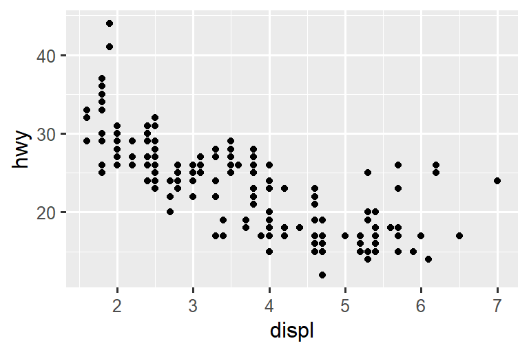
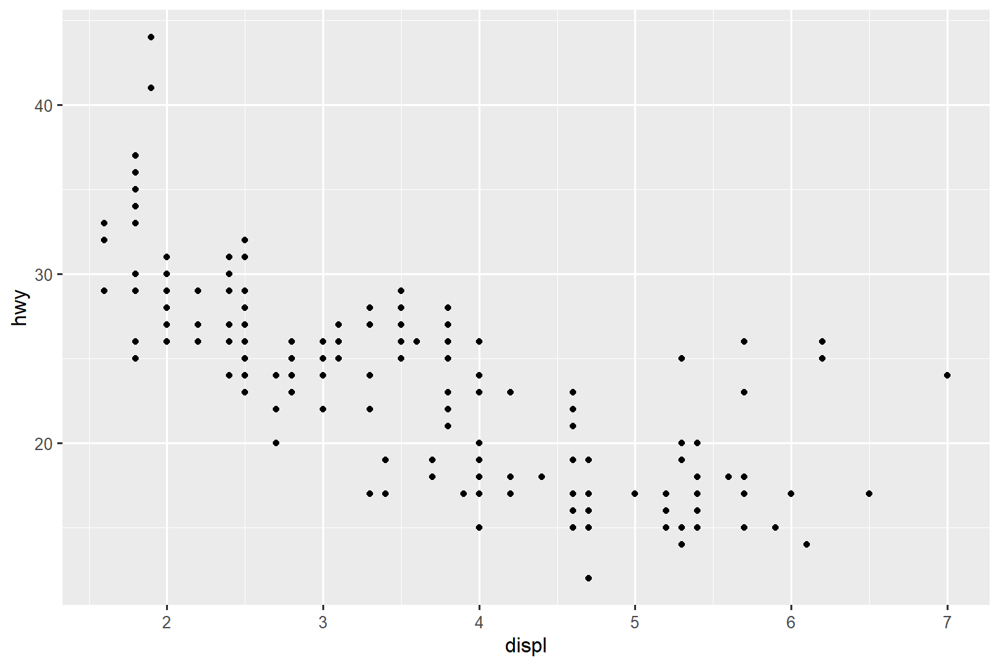

---
title: "Diamond sizes"
date: 2022-09-12
format: html
---
```{r}
#| label: setup
#| include: false
library(tidyverse)
smaller <- diamonds |>
filter(carat <= 2.5)
```
We have data about `r nrow(diamonds)` diamonds.
Only `r nrow(diamonds) - nrow(smaller)` are larger than 2.5 carats.
The distribution of the remainder is shown below:
```{r}
#| label: plot-smaller-diamonds
#| echo: false
smaller |>
ggplot(aes(x = carat)) +
geom_freqpoly(binwidth = 0.01)
```29 Quarto
You are reading the work-in-progress second edition of R for Data Science. This chapter is largely complete and just needs final proof reading. You can find the complete first edition at https://r4ds.had.co.nz.
29.1 Introduction
29.1 简介
Quarto提供了一个统一的数据科学创作框架，将您的代码、其结果和您的文字结合在一起。Q uarto documents 是完全可复制的，并支持数十种输出格式，如 PDF、Word files、presentations 等。
Quarto files 旨在以三种方式使用：
用于与决策者沟通，他们希望关注结论，而不是分析背后的代码。
与其他数据科学家（包括未来的您！）合作，他们对您的结论和您如何达到它们（即代码）都感兴趣。
作为进行数据科学的环境，作为现代实验室笔记本，在其中不仅可以记录您所做的事情，还可以记录您当时的想法。
Quarto 是一个命令行界面工具，而不是 R 包。 这意味着帮助不是通过 ? 获得的。 相反，在您学习本章并在未来使用 Quarto 时，您应该参考 Quarto documentation。
如果您是 R Markdown 用户，您可能会想 “Quarto 听起来很像 R Markdown”。 您没错！ Quarto 将 R Markdown 生态系统中许多包（rmarkdown、bookdown、distill、xaringan 等）的功能统一到一个一致的系统中，并通过对 Python 和 Julia 等多种编程语言的原生支持扩展它。 在某种意义上，Quarto 反映了在十年中扩展和支持 R Markdown 生态系统所学到的一切。
29.1.1 Prerequisites
29.1.1 先决条件
您需要 Quarto command line interface (Quarto CLI)，但您不需要显式安装或加载它，因为 RStudio 在需要时会自动执行这两项操作。
29.2 Quarto basics
29.2 Quarto 基础
这是一个 Quarto 文件 – 一个扩展名为 .qmd` 的纯文本文件：
它包含三种重要类型的内容：
- 一个（可选的）YAML header 由
---s 包围。 -
Chunks of R code 由
```包围。 - 混合了简单文本格式如
# heading和_italics_的文本。
Figure 29.1 显示了 RStudio 中的 .qmd 文档，其中代码和输出交错。您 可以通过点击 Run 图标（它看起来像 chunk 顶部的播放按钮），或按 Cmd/Ctrl + Shift + Enter 来运行每个代码块。 RStudio 执行代码并将结果与代码内联显示。

如果您不喜欢在文档中看到图形和输出结果，而更愿意使用 RStudio 的控制台和绘图窗格，您可以点击 “Render” 旁边的齿轮图标，切换到 “Chunk Output in Console”，如 Figure 29.2 所示。

要生成包含所有文本、代码和结果的完整报告，点击 “Render” 或按下 Cmd/Ctrl + Shift + K。 您还可以使用 quarto::quarto_render("diamond-sizes.qmd") 以编程方式执行此操作。 这将在 viewer 窗口中显示报告，如 Figure 29.3 所示，并创建一个 HTML 文件。

当您渲染文档时，Quarto 将 .qmd 文件发送给 knitr，https://yihui.org/knitr/，它执行所有的 code chunks 并创建一个包含代码及其输出的新的 markdown (.md) 文档。 然后，由 knitr 生成的 markdown 文件被 pandoc，https://pandoc.org/，处理，pandoc 负责创建最终的文件。 这个过程如 Figure 29.4 所示。 这种两步工作流的优势是您可以创建非常广泛的输出格式，您将在 Chapter 30 中了解到这一点。

要开始使用您自己的 .qmd 文件，请在菜单栏中选择 File > New File > Quarto Document…。 RStudio 将启动一个向导，您可以使用它来预填充您的文件，以提醒您 Quarto 的关键特性。
接下来的几节将更详细地介绍 Quarto 文档的三个组成部分：the markdown text, the code chunks, the YAML header。
29.2.1 Exercises
29.2.1 练习
使用 File > New File > Quarto Document 创建一个新的 Quarto 文档。 阅读说明。 练习逐个运行代码块。 然后通过点击适当的按钮或使用适当的快捷键来渲染（render）文档。 验证您可以修改代码，重新运行它，并查看修改后的输出。
创建一个新的 Quarto 文档为三种内置格式：HTML、PDF、Word。 渲染这三个文档。 输出有何不同？ 输入有何不同？ （为了构建 PDF 输出，您可能需要安装 LaTeX — 如果需要，RStudio 将提示您安装。）
29.3 Visual editor
29.3 可视化编辑器
RStudio 的可视化编辑器提供了一个 WYSIWYM 界面，用于编写 Quarto 文档。 在底层，Quarto 文档（.qmd 文件）采用了 Markdown 语法，这是一种轻量级的约定，用于格式化纯文本文件。 实际上，Quarto 使用了 Pandoc Markdown（一种稍微扩展的 Markdown 版本，Quarto 能够理解），包括表格、引用、交叉引用、脚注、divs/spans、定义列表、属性、原始 HTML/TeX 等，还支持执行代码块并内联显示其输出。 虽然 Markdown 的设计目的是易于阅读和编写，但仍然需要学习新的语法，您将在 Section 29.4 中看到。 因此，如果您对像 .qmd 文件这样的计算文档还不熟悉，但有使用 Google Docs 或 MS Word 等工具的经验，那么在 RStudio 中使用可视化编辑器是开始使用 Quarto 的最简单方法。
在可视化编辑器中，您可以使用菜单栏上的按钮插入图片、表格、交叉引用等，也可以使用通用的 ⌘ / 快键插入几乎任何内容。 如果您在行的开头（如 Figure 29.5 所示），还可以输入 / 来调用该快捷方式。
![A Quarto document displaying various features of the visual editor such as text formatting (italic, bold, underline, small caps, code, superscript, and subscript), first through third level headings, bulleted and numbered lists, links, linked phrases, and images (along with a pop-up window for customizing image size, adding a caption and alt text, etc.), tables with a header row, and the insert anything tool with options to insert an R code chunk, a Python code chunk, a div, a bullet list, a numbered list, or a first level heading (the top few choices in the tool).](quarto/quarto-visual-editor.png)
使用可视化编辑器还可以方便地插入图像并自定义其显示方式。 您可以直接将剪贴板中的图像粘贴到可视化编辑器中（RStudio 会将该图像的副本放置在项目目录中并链接到它），或者可以使用可视化编辑器的 Insert > Figure / Image 菜单浏览到要插入的图像或粘贴其 URL。 此外，使用相同的菜单，您还可以调整图像的大小，并添加标题、替代文本和链接。
可视化编辑器还有许多其他功能，我们在此未列举，您在使用它进行创作时可能会发现它们很有用。
最重要的是，虽然可视化编辑器以格式化方式显示内容，但在底层，它将内容保存为普通的 Markdown，并且您可以在可视化编辑器和源代码编辑器之间切换，使用任一工具查看和编辑内容。
29.3.1 Exercises
- 使用可视化编辑器重新创建 Figure 29.5 中的文档。
- 使用可视化编辑器，使用 Insert 菜单插入一个代码块，然后插入任何工具。
- 使用可视化编辑器，找出如何：
- 添加脚注（footnote）。
- 添加水平线（horizontal rule）。
- 添加块引用（block quote）。
- 在可视化编辑器中，转到 Insert > Citation 并使用其 DOI (digital object identifier) 插入一篇名为 Welcome to the Tidyverse 的论文的引用，该论文的 DOI 是 10.21105/joss.01686。 渲染文档并观察引用如何显示在文档中。 您在文档的 YAML 中观察到了哪些变化？
29.4 Source editor
29.4 源码编辑器
您还可以使用 RStudio 中的源码编辑器编辑 Quarto 文档，无需使用可视化编辑器的帮助。 虽然可视化编辑器对于那些有在 Google docs 等工具中编写经验的人来说会感觉很熟悉，但源码编辑器对于那些有编写 R 脚本或 R Markdown 文档经验的人来说也会感觉很熟悉。 源码编辑器还可以用于调试任何 Quarto 语法错误，因为在纯文本中更容易捕捉这些错误。
下面的指南显示了如何在源码编辑器中使用 Pandoc 的 Markdown 编写 Quarto 文档。
## Text formatting
*italic* **bold** ~~strikeout~~ `code`
superscript^2^ subscript~2~
[underline]{.underline} [small caps]{.smallcaps}
## Headings
# 1st Level Header
## 2nd Level Header
### 3rd Level Header
## Lists
- Bulleted list item 1
- Item 2
- Item 2a
- Item 2b
1. Numbered list item 1
2. Item 2.
The numbers are incremented automatically in the output.
## Links and images
<http://example.com>
[linked phrase](http://example.com)
{fig-alt="Quarto logo and the word quarto spelled in small case letters"}
## Tables
| First Header | Second Header |
|--------------|---------------|
| Content Cell | Content Cell |
| Content Cell | Content Cell |最好的学习方法就是亲自尝试。 可能需要几天的时间，但很快你就会熟悉它们，而且不需要思考就能应用它们。 如果你忘记了某些语法，你可以在 Help > Markdown Quick Reference 下找到一个方便的 Markdown 快速参考表。
29.4.1 Exercises
通过创建一个简短的简历来练习所学内容。 标题应为你的姓名，并至少包括教育或就业方面的标题。 每个部分应包含工作/学位的项目符号列表。 用粗体突出显示年份。
-
使用源码编辑器和 Markdown 快速参考手册，找出以下内容的写法：
- 添加脚注（footnote）。
- 添加水平分隔线（horizontal rule）。
- 添加块引用（block quote）。
将
diamond-sizes.qmd文件的内容从 https://github.com/hadley/r4ds/tree/main/quarto 复制粘贴到本地的 R Quarto 文档中。 检查是否可以运行它，然后在频率多边形之后添加描述其最显著特征的文本。在 Google doc 或 MS Word （或找到你之前创建的文档）中创建一个文档，其中包含标题、超链接、格式化文本等内容。 将文档的内容复制粘贴到 Quarto 的可视化编辑器中。 然后，切换到源码编辑器并检查源代码。
29.5 Code chunks
29.5 代码块
要在 Quarto 文档中运行代码，您需要插入一个代码块。 有三种方法可以实现：
使用键盘快捷键 Cmd + Option + I / Ctrl + Alt + I。
在编辑器工具栏中使用 “Insert” 按钮图标。
手动输入代码块的定界符
```{r}和```。
我们建议您学习使用键盘快捷键。 这将在长期使用中为您节省很多时间！
您可以继续使用键盘快捷键来运行代码，希望您现在已经熟悉并喜欢它了：Cmd/Ctrl + Enter。 然而，代码块有一个新的键盘快捷键：Cmd/Ctrl + Shift + Enter，它可以运行代码块中的所有代码。 将代码块视为一个函数。 代码块应该相对独立，并围绕着一个特定的任务展开。
下面的部分描述了代码块头部，包括 ```{r}，后面是可选的代码块标签和其他各种代码块选项，每个选项占据自己的一行，并以 #| 标记。
29.5.1 Chunk label
29.5.1 代码块标签
代码块可以被赋予一个可选的标签，例如
```{r}
#| label: simple-addition
1 + 1
```#> [1] 2这具有三个优点：
-
您可以使用脚本编辑器左下方的下拉代码导航器更轻松地导航到特定的代码块位置：

代码块生成的图形将具有有用的名称，使它们更容易在其他地方使用。 在 Section 29.6 中会有更多介绍。
您可以设置缓存代码块的网络，以避免在每次运行时重新执行昂贵的计算。 在 Section 29.8 中会有更多介绍。
您的代码块标签应该简短但富有启发性，并且不应包含空格。我 们建议使用破折号（-）来分隔单词（而不是下划线，_），并避免在代码块标签中使用其他特殊字符。
通常情况下，您可以根据自己的喜好为代码块命名，但有一个具有特殊行为的代码块名字：setup。 在笔记本模式下，名为 setup 的代码块将在任何其他代码之前自动运行一次。
此外，代码块标签不能重复。 每个代码块标签必须是唯一的。
29.5.2 Chunk options
29.5.2 代码块选项
代码块的输出可以通过选项（options）进行自定义，这些选项是提供给代码块头部的字段。 Knitr 提供了近 60 个选项，您可以使用它们来自定义您的代码块。 这里我们将介绍您经常使用的最重要的代码块选项。 您可以在 https://yihui.org/knitr/options 上查看完整列表。
最重要的一组选项控制代码块是否被执行以及在生成的报告中插入哪些结果：
eval: false防止代码被执行。 （显然，如果代码不运行，则不会生成任何结果）。 这对于显示示例代码或禁用大块代码而不需要在每一行进行注释非常有用。include: false运行代码，但不显示代码或结果在最终文档中。 使用此选项可以避免在报告中混乱的设置代码。echo: false不显示代码，但结果会出现在最终文件中。 在撰写面向不希望看到底层 R 代码的人的报告时使用此选项。message: falseorwarning: false不显示消息或警告出现在最终文件中。results: hide隐藏打印输出；fig-show: hide隐藏图形。error: true即使代码返回错误，仍然继续渲染。 这在最终版本的报告中很少使用，但如果需要调试.qmd文件中的具体情况，它可以非常有用。 如果您正在教学 R 并希望故意引入错误，这也很有用。 默认情况下，error: false导致在文档中出现一个错误时渲染失败。
这些代码块选项都会添加到代码块的头部，在 #| 之后，例如，在下面的代码块中，由于 eval 设置为 false，结果不会被打印出来。
```{r}
#| label: simple-multiplication
#| eval: false
2 * 2
```下表总结了每个选项抑制的输出类型：
| Option | Run code | Show code | Output | Plots | Messages | Warnings |
|---|---|---|---|---|---|---|
eval: false |
X | X | X | X | X | |
include: false |
X | X | X | X | X | |
echo: false |
X | |||||
results: hide |
X | |||||
fig-show: hide |
X | |||||
message: false |
X | |||||
warning: false |
X |
29.5.3 Global options
29.5.3 全局选项
随着您在 knitr 中的工作越来越多，您会发现一些默认的代码块选项不符合您的需求，因此您想要进行更改。
您可以通过在文档的 YAML 部分的 execute 下添加首选项（preferred options）来实现这一点。 例如，如果您为不需要看到代码只需要查看结果和叙述的受众准备报告，您可以在文档级别设置 echo: false。 这将默认隐藏代码，只显示您选择显示的代码块（使用 echo: true）。 您可以考虑设置 message: false 和 warning: false，但这会使调试问题变得更加困难，因为您在最终文档中看不到任何消息。
title: "My report"
execute:
echo: false由于 Quarto 被设计为支持多种语言（包括 R 以及其他语言如 Python、Julia 等），并非所有的 knitr 选项都可以在文档执行级别使用，因为其中一些选项仅适用于 knitr 而不适用于 Quarto 用于在其他语言中运行代码的引擎（例如 Jupyter）。 然而，您仍然可以在文档的 knitr 字段下的 opts_chunk 中设置这些选项作为全局选项。 例如，在撰写书籍和教程时，我们会设置以下选项：
title: "Tutorial"
knitr:
opts_chunk:
comment: "#>"
collapse: true这使用了我们首选的注释（comment）格式，并确保代码和输出紧密结合。
29.5.4 Inline code
29.5.4 内联代码
还有一种将 R 代码嵌入到 Quarto 文档中的方法：直接在文本中使用 `r `。 如果您在文本中提到数据的属性，这种方法非常有用。 例如，本章开始时使用的示例文档中有以下内容：
We have data about
`r nrow(diamonds)`diamonds. Only`r nrow(diamonds) - nrow(smaller)`are larger than 2.5 carats. The distribution of the remainder is shown below:
渲染报告后，这些计算的结果将插入到文本中：
We have data about 53940 diamonds. Only 126 are larger than 2.5 carats. The distribution of the remainder is shown below:
在将数字插入文本时，format() 函数非常有用。 它允许您设置数字的位数（digits），以避免打印过度精确的结果，并使用 big.mark 参数使数字更易读。 您可以将这些功能组合到一个辅助函数中，如下所示：
comma <- function(x) format(x, digits = 2, big.mark = ",")
comma(3452345)
#> [1] "3,452,345"
comma(.12358124331)
#> [1] "0.12"29.5.5 Exercises
添加一个部分（section），探讨钻石尺寸如何根据切工、颜色和净度而变化。 假设您正在为一个不了解 R 的人撰写报告，您可以设置一个全局选项，而不是在每个代码块上设置
echo: false。从 https://github.com/hadley/r4ds/tree/main/quarto 下载
diamond-sizes.qmd。 添加一个部分，描述最大的 20 颗钻石，包括显示它们最重要属性的表格。修改
diamonds-sizes.qmd，使用label_comma()生成漂亮格式的输出。 同时包括大于 2.5 克拉的钻石的百分比。
29.6 Figures
29.6 图像
在 Quarto 文档中，图像可以以嵌入方式（例如，PNG 或 JPEG 文件）或作为代码块的结果生成。
要从外部文件中嵌入图像，你可以使用 RStudio 中的可视化编辑器的插入菜单，选择 Figure / Image。 这将弹出一个菜单，你可以浏览到要插入的图像，并添加替代文本或标题，并调整其大小。 在可视化编辑器中，你还可以直接从剪贴板中粘贴图像到文档中，RStudio 会将该图像的副本放置在项目文件夹中。
如果你包含一个生成图像的代码块（例如，包含 ggplot() 调用），生成的图形将自动包含在 Quarto 文档中。
29.6.1 Figure sizing
29.6.1 图像大小
在 Quarto 中，图像的大小和形状是一个较大的挑战。 有五个主要选项用于控制图像的大小：fig-width, fig-height, fig-asp, out-width and out-height。 图像的大小调整是具有挑战性的，因为有两个尺寸（R 创建的图形的尺寸和插入输出文档时的尺寸），以及多种指定尺寸的方法（例如 height, width, and aspect ratio: pick two of three）。
我们推荐使用五个选项中的三个：
图像通常更具美感如果它们具有一致的宽度。 为了实现这个，可以默认设置
fig-width: 6(6”)、fig-asp: 0.618（黄金比例）。 然后在单个代码块中，只需要调整fig-asp。通过
out-width控制输出图像的大小，并将其设置为输出文档的正文宽度的百分比。 建议设置out-width: "70%"、fig-align: center。 这样可以给图像留出空间，不会占用太多的空间。要将多个图像放置在一行中，可以将
layout-ncol设置为 2（两个图形）、3（三个图形）等。 这样，如果layout-ncol为 2，每个图形的out-width将自动设置为 “50%”；如果layout-ncol为 3，每个图形的out-width将自动设置为 “33%”。 根据您想要展示的内容（例如，展示数据或展示不同的图像变化），还可以调整fig-width，如下所述。
如果您发现图像中文本太小，那么您需要调整 fig-width。 如果 fig-width 大于图像在最终文档中的渲染尺寸，那么文本将会过小；如果 fig-width 较小，文本将会过大。 您通常需要进行一些实验来确定 fig-width 和最终文档中宽度之间的正确比例关系。 为了说明这个原理，以下三个图形的 fig-width 分别为 4、6、8：



如果您希望确保所有图像的字体大小保持一致，在设置 out-width 时，您还需要调整 fig-width 以保持与默认 out-width 的相同比例关系。 例如，如果默认的 fig-width 为 6，out-width 为 “70%”，当您设置 out-width: "50%" 时，您需要将 fig-width 设置为 4.3 (6 * 0.5 / 0.7)。
图像的大小和缩放是一门既有艺术又有科学的学问，正确调整可能需要反复尝试和调整。 您可以在 taking control of plot scaling blog post 中了解更多关于图形大小调整的内容。
29.6.2 Other important options
29.6.2 其他重要选项
在代码和文本交织的情况下，比如在这本书中，您可以设置 fig-show: hold，这样绘图会在代码之后显示。 这样做的一个好处是，它迫使您将大块的代码与解释分开。
要为绘图添加标题（caption），请使用 fig-cap。 在 Quarto 中，这将使图像从内联变为 “floating”。
如果您要生成 PDF 输出，那么默认的图形类型是 PDF。 这是一个很好的默认设置，因为 PDF 是高质量的矢量图形。 然而，如果您要显示成千上万个点，它们可能会产生非常大和缓慢的图形。 在这种情况下，设置 fig-format: "png" 强制使用 PNG 格式。 它们的质量稍低，但文件大小会更小。
给生成图像的代码块命名是一个好习惯，即使您不经常给其他代码块加标签。 代码块的标签用于生成磁盘上图像的文件名，因此给代码块命名可以更轻松地选择出图像并在其他情况下重用（例如，如果您想快速将单个图像放入电子邮件中）。
29.6.3 Exercises
在可视化编辑器中打开
diamond-sizes.qmd，找到一张钻石的图片，复制它，然后粘贴到文档中。双 击图片，在其上方添加标题。调 整图片的大小，并渲染您的文档。观 察图片如何保存在当前工作目录中。在
diamond-sizes.qmd中编辑生成绘图的代码块的标签，以fig-为前缀，并使用代码块选项fig-cap添加一个标题说明。然 后，编辑代码块上方的文本，使用 Insert > Cross Reference 为该图形添加一个交叉引用。-
逐个使用以下代码块选项更改图像的大小，渲染您的文档，并描述图像的变化情况。
fig-width: 10fig-height: 3out-width: "100%"out-width: "20%"
29.7 Tables
29.7 表格
类似于图像，您可以在 Quarto 文档中包含两种类型的表格。 它们可以是您直接在 Quarto 文档中创建的 Markdown 表格（使用 “Insert Table” 菜单），或者它们可以是作为代码块计算结果生成的表格。 在本节中，我们将重点介绍后者，通过计算生成的表格。
默认情况下，Quarto 将数据框和矩阵打印为在控制台中看到的样子：
mtcars[1:5, ]
#> mpg cyl disp hp drat wt qsec vs am gear carb
#> Mazda RX4 21.0 6 160 110 3.90 2.620 16.46 0 1 4 4
#> Mazda RX4 Wag 21.0 6 160 110 3.90 2.875 17.02 0 1 4 4
#> Datsun 710 22.8 4 108 93 3.85 2.320 18.61 1 1 4 1
#> Hornet 4 Drive 21.4 6 258 110 3.08 3.215 19.44 1 0 3 1
#> Hornet Sportabout 18.7 8 360 175 3.15 3.440 17.02 0 0 3 2如果您希望以其他格式显示数据，可以使用 knitr::kable() 函数。 下面的代码生成 Table 29.1。
knitr::kable(mtcars[1:5, ], )| mpg | cyl | disp | hp | drat | wt | qsec | vs | am | gear | carb | |
|---|---|---|---|---|---|---|---|---|---|---|---|
| Mazda RX4 | 21.0 | 6 | 160 | 110 | 3.90 | 2.620 | 16.46 | 0 | 1 | 4 | 4 |
| Mazda RX4 Wag | 21.0 | 6 | 160 | 110 | 3.90 | 2.875 | 17.02 | 0 | 1 | 4 | 4 |
| Datsun 710 | 22.8 | 4 | 108 | 93 | 3.85 | 2.320 | 18.61 | 1 | 1 | 4 | 1 |
| Hornet 4 Drive | 21.4 | 6 | 258 | 110 | 3.08 | 3.215 | 19.44 | 1 | 0 | 3 | 1 |
| Hornet Sportabout | 18.7 | 8 | 360 | 175 | 3.15 | 3.440 | 17.02 | 0 | 0 | 3 | 2 |
阅读 ?knitr::kable 的文档以了解其他自定义表格的方式。 对于更深层次的自定义，可以考虑使用 gt, huxtable, reactable, kableExtra, xtable, stargazer, pander, tables, and ascii 等包。 每个包都提供了一组工具，用于从 R 代码返回格式化的表格。
29.7.1 Exercises
在可视化编辑器中打开
diamond-sizes.qmd，插入一个代码块，并使用knitr::kable()添加一个表格，显示diamonds数据框的前 5 行。使用
gt::gt()显示相同的表格。为表格添加一个以
tbl-为前缀的代码块标签，并使用代码块选项tbl-cap为表格添加标题。然 后，编辑代码块上方的文本，使用 Insert > Cross Reference 为表格添加一个交叉引用。
29.8 Caching
29.8 缓存
通常情况下，每次渲染文档时都从一个完全干净的状态开始。 这对于可重现性非常有好处，因为它确保您已经在代码中捕捉到了每一个重要的计算。 然而，如果某些计算需要很长时间，这可能会很痛苦。 解决方案是使用 cache: true。
您可以在文档级别启用 Knitr 缓存，以缓存文档中所有计算的结果，使用标准的 YAML 选项：
---
title: "My Document"
execute:
cache: true
---您还可以在代码块级别启用缓存以在特定代码块中缓存计算结果：
```{r}
#| cache: true
# code for lengthy computation...
```当设置了缓存时，它将会将代码块的输出保存到一个特定命名的文件中。 在后续运行中，knitr 会检查代码是否发生了变化，如果没有变化，它将重用缓存的结果。
缓存系统必须谨慎使用，因为默认情况下它仅基于代码本身，而不考虑其依赖关系。 例如，在下面的示例中，processed_data 代码块依赖于 raw-data 代码块：
``` {{r}}
#| label: raw-data
#| cache: true
rawdata <- readr::read_csv("a_very_large_file.csv")
`````` {{r}}
#| label: processed_data
#| cache: true
processed_data <- rawdata |>
filter(!is.na(import_var)) |>
mutate(new_variable = complicated_transformation(x, y, z))
```通过对 processed_data 代码块设置缓存，如果更改了 dplyr 管道，它将会被重新运行，但如果 read_csv() 调用发生更改，它将不会重新运行。 你可以通过使用 dependson 代码块选项来避免这个问题：
``` {{r}}
#| label: processed-data
#| cache: true
#| dependson: "raw-data"
processed_data <- rawdata |>
filter(!is.na(import_var)) |>
mutate(new_variable = complicated_transformation(x, y, z))
```dependson 应包含一个字符向量，其中包含所有缓存代码块依赖的代码块。 当检测到其中一个依赖项发生更改时，Knitr 将更新缓存块的结果。
请注意，如果 a_very_large_file.csv 更改，代码块将不会更新，因为 Knitr 缓存只跟踪 .qmd 文件内的更改。 如果你想跟踪该文件的更改，可以使用 cache.extra 选项。 这是一个任意的 R 表达式，当它发生更改时将使缓存无效。 一个好用的函数是 file.mtime()：它返回上次修改的时间。 然后你可以编写：
``` {{r}}
#| label: raw-data
#| cache: true
#| cache.extra: !expr file.mtime("a_very_large_file.csv")
rawdata <- readr::read_csv("a_very_large_file.csv")
```我们遵循了 David Robinson 的建议，为这些代码块命名：每个代码块的名称都以它创建的主要对象命名。 这样可以更容易理解 dependson 的规范。
随着缓存策略的逐渐复杂化，定期使用 knitr::clean_cache() 清除所有缓存是一个好主意。
29.8.1 Exercises
设置一个网络代码块 d 依赖于 c 和 b，其中 b 和 c 依赖于 a。每 个代码块将使用 lubridate::now() 打印当前时间，并设置 cache: true，然后验证你对缓存的理解。
29.9 Troubleshooting
29.9 故障排除
调试 Quarto 文档可能会很具有挑战性，因为您不再处于交互式 R 环境中，而且您需要学习一些新的技巧。 此外，错误可能是由于 Quarto 文档本身的问题或者 Quarto 文档中的 R 代码引起的。
在带有代码块的文档中，一个常见的错误是重复的代码块标签，如果您的工作流程涉及复制和粘贴代码块，这种错误尤其普遍。 要解决此问题，您只需更改其中一个重复的标签即可。
如果错误是由文档中的 R 代码引起的，您应该始终尝试在交互式会话中重新创建问题。 重新启动 R，然后从代码菜单中选择 “Run all chunks”，或者使用键盘快捷键 Ctrl + Alt + R。 如果运气好的话，这将重新创建问题，然后您可以通过交互方式找出问题所在。
如果这样做没有帮助，那么您的交互式环境和 Quarto 环境之间一定存在一些差异。 您需要系统地探索各种选项。 最常见的差异是工作目录：Quarto 的工作目录是它所在的目录。 通过在代码块中包含 getwd()，检查工作目录是否符合您的期望。
接下来，列出可能导致错误的所有可能性。 您需要系统地检查在您的 R 会话和 Quarto 会话中它们是否相同。 最简单的方法是在引起问题的代码块上设置 error: true，然后使用 print() 和 str() 来检查设置是否符合您的期望。
29.10 YAML header
29.10 YAML 标头
您可以通过调整 YAML header 的参数来控制许多其他的 “整个文档” 设置。 也许您想知道 YAML 是什么意思：它代表的是 “YAML Ain’t Markup Language”，它被设计用于以对人类易于阅读和编写的方式表示层次化数据。 Quarto 使用它来控制输出的许多细节。 在这里，我们将讨论三个方面：self-contained documents、document parameters、bibliographies。
29.10.1 Self-contained
29.10.1 自包含
HTML 文档通常具有许多外部依赖项（例如图像、CSS样式表、JavaScript等），默认情况下，Quarto 会将这些依赖项放在与您的 .qmd 文件相同目录下的 _files 文件夹中。 如果您将 HTML 文件发布到托管平台（例如 QuartoPub, https://quartopub.com/），该目录中的依赖项将与您的文档一起发布，因此可以在发布的报告中访问它们。 然而，如果您希望将报告通过电子邮件发送给同事，您可能更喜欢拥有一个单独的、自包含的（self-contained）HTML 文档，其中嵌入了所有的依赖项。 您可以通过指定 embed-resources 选项来实现这一点：
format:
html:
embed-resources: true生成的文件将是自包含（self-contained）的，这意味着它不需要任何外部文件和互联网访问，就可以通过浏览器正确显示。
29.10.2 Parameters
29.10.2 参数
Quarto 文档可以包含一个或多个参数，这些参数的值可以在渲染报告时进行设置。 参数在您希望以不同的值重新呈现同一份报告时非常有用，以满足各种关键输入的要求。 例如，您可能需要按分行生成销售报告，按学生生成考试结果报告，或按国家生成人口统计摘要报告。 要声明一个或多个参数，请使用 params 字段。
以下示例使用一个 my_class 参数来确定要显示哪个车型类别：
---
format: html
params:
my_class: "suv"
---
```{r}
#| label: setup
#| include: false
library(tidyverse)
class <- mpg |> filter(class == params$my_class)
```
# Fuel economy for `r params$my_class`s
```{r}
#| message: false
ggplot(class, aes(x = displ, y = hwy)) +
geom_point() +
geom_smooth(se = FALSE)
```正如您所看到的，参数在代码块中作为一个只读列表命名为 params 可供使用。
您可以直接将原子向量写入 YAML 头文件。 您还可以通过在参数值前加上 !expr 来运行任意的 R 表达式。 这是指定日期/时间参数的好方法。
params:
start: !expr lubridate::ymd("2015-01-01")
snapshot: !expr lubridate::ymd_hms("2015-01-01 12:30:00")29.10.3 Bibliographies and Citations
29.10.3 参考文献和引用
Quarto 可以自动按照多种样式生成引用（citations）和参考文献（bibliography）。 向 Quarto 文档添加引用和参考文献的最简单方法是使用 RStudio 中的可视化编辑器。
要使用可视化编辑器添加引用，请转到 Insert > Citation。 可以从多种来源插入引用：
DOI (Document Object Identifier) references.
Zotero personal or group libraries.
Your document bibliography (a
.bibfile in the directory of your document)
在底层，可视化模式使用标准的 Pandoc markdown 来表示引用（例如，[@citation]）。
如果您使用前三种方法之一添加引用，可视化编辑器将自动为您创建一个 bibliography.bib 文件，并将引用添加到其中。 它还会在文档的 YAML 中添加一个 bibliography 字段。 随着您添加更多的引用，该文件将填充其引用。 您还可以使用许多常见的参考文献格式（包括 BibLaTeX、BibTeX、EndNote、Medline）直接编辑此文件。
要在源码编辑器的 .qmd 文件中创建引用，请使用由引用文件中的引用标识符组成的键，前面加上 ‘@’ 符号。 然后将引用放在方括号中。 以下是一些示例：
Separate multiple citations with a `;`: Blah blah [@smith04; @doe99].
You can add arbitrary comments inside the square brackets:
Blah blah [see @doe99, pp. 33-35; also @smith04, ch. 1].
Remove the square brackets to create an in-text citation: @smith04
says blah, or @smith04 [p. 33] says blah.
Add a `-` before the citation to suppress the author's name:
Smith says blah [-@smith04].当 Quarto 渲染您的文件时，它会构建并将参考文献追加到文档的末尾。 参考文献将包含来自您的参考文献文件中的每个引用，但不包含章节标题。 因此，常见的做法是在文件末尾加上一个用于参考文献的章节标题，例如 # References 或 # Bibliography。
您可以通过在 csl 字段中引用 CSL (citation style language) 文件来更改引用和参考文献的样式：
bibliography: rmarkdown.bib
csl: apa.csl与 bibliography 字段一样，您的 CSL 文件应该包含文件的路径。 在这里，我们假设 CSL 文件与 .qmd 文件位于同一目录中。 一个寻找常见参考文献样式的好地方是 https://github.com/citation-style-language/styles。
29.11 Workflow
29.11 工作流程
之前，我们讨论了一种基本的工作流程，即在控制台（console）中进行交互式的 R 代码编写，然后将有效的代码部分捕捉到脚本编辑器（script editor）中。 Quarto 将控制台和脚本编辑器结合在一起，模糊了交互式探索和长期代码捕捉之间的界限。 您可以在代码块内快速迭代，使用 Cmd/Ctrl + Shift + Enter 进行编辑和重新执行。 当您满意时，可以继续并开始一个新的代码块。
Quarto 之所以重要，还因为它紧密地融合了文字和代码。 这使其成为一个出色的分析笔记本（analysis notebook），因为它可以让您开发代码并记录您的想法。 分析笔记本与物理科学中的经典实验室笔记本有许多相同的目标。 它具有以下特点：
记录您做了什么以及为什么这样做。 无论您的记忆有多好，如果您不记录您的操作，总会有一段时间您会忘记重要的细节。 将它们写下来，以免遗忘！
支持深入思考。 如果您在进行分析时记录下自己的想法，并持续反思它们，您更有可能进行出色的分析。 当您最终撰写分析报告与他人分享时，这也会为您节省时间。
帮助他人理解您的工作。 很少有人独自进行数据分析，您通常会作为团队的一员工作。 实验室笔记本不仅可以帮助您与同事或实验室伙伴分享您的工作内容，还可以解释您为何这样做。
许多关于有效使用实验室笔记本的良好建议同样适用于分析笔记本。 我们参考了我们自己的经验以及 Colin Purrington 在实验室笔记本方面的建议（https://colinpurrington.com/tips/lab-notebooks），总结出以下几点提示：
确保每个笔记本都有一个描述性的标题、一个引人注目的文件名，并且第一个段落简要描述了分析的目标。
-
使用 YAML header date 字段记录您开始使用该笔记本的日期：
date: 2016-08-23使用 ISO8601 YYYY-MM-DD 格式，以确保没有歧义。 即使您平时不以这种方式书写日期，也请使用该格式。
如果您在一个分析想法上花费了很多时间，结果发现它是一条死胡同，不要将其删除！ 写下一个简要说明，解释为什么它失败了，并将其保留在笔记本中。 这将帮助您在未来回到分析时避免走同样的死胡同。
通常情况下，最好在 R 之外进行数据录入。 但如果您确实需要记录少量数据片段，请使用
tibble::tribble()方法清晰地排列出来。如果您发现数据文件中存在错误，永远不要直接修改它，而是编写代码来纠正该值。 解释为什么要进行修正。
在您结束当天的工作之前，请确保能够渲染笔记本。 如果使用了缓存，请确保清除缓存。 这将让您在代码仍然清晰明了的情况下解决任何问题。
如果您希望您的代码能够长期可重现（即，可以在下个月或明年再次运行），您需要跟踪代码所使用的软件包的版本。 一个严谨的方法是使用 renv（https://rstudio.github.io/renv/index.html），它可以将软件包存储在您的项目目录中。 一个快速而简单的方法是包含一个运行
sessionInfo()的代码块 — 这不会让您轻松地重新创建当前的软件包，但至少您会知道它们是什么。在您的职业生涯中，您将创建非常多的分析笔记本。 您应该如何组织它们，以便在将来能够再次找到它们？ 我们建议将它们存储在单独的项目中，并制定一个良好的命名方案。
29.12 Summary
29.12 总结
在本章中，我们向您介绍了 Quarto，用于在一个地方撰写和发布包含代码和文字的可重现的计算文档。 您学习了如何在 RStudio 中使用可视化或源码编辑器编写 Quarto 文档，了解了代码块的工作原理以及如何自定义其选项，学习了如何在 Quarto 文档中包含图像和表格，以及有关计算缓存的选项。 此外，您还学习了如何调整 YAML header 选项以创建自包含或参数化的文档，以及如何包含引用和参考文献。 我们还为您提供了一些故障排除和工作流程的技巧。
虽然本章的介绍足以让您开始使用 Quarto，但还有很多内容需要学习。 Quarto 目前仍然比较年轻，正快速发展。 了解最新创新的最佳途径是访问官方的 Quarto 网站：https://quarto.org。
在这里，我们还没有涵盖到两个重要的主题：协作和准确地向其他人传达您的思想细节。 协作是现代数据科学的重要组成部分，通过使用版本控制工具，如 Git 和 GitHub，您可以使自己的工作更加轻松。 我们推荐阅读《Happy Git with R》，这是 Jenny Bryan 编写的一本用户友好的关于 Git 和 GitHub 的介绍，特别适合 R 用户。 这本书可以免费在线阅读：https://happygitwithr.com。
我们还没有涉及到为了清晰传达分析结果而应该编写的内容。 为了提高您的写作水平，我们强烈推荐阅读 Joseph M. Williams 和 Joseph Bizup 的 Style: Lessons in Clarity and Grace 或 George Gopen 的 The Sense of Structure: Writing from the Reader’s Perspective。 这两本书将帮助您理解句子和段落的结构，并为您提供工具来使您的写作更加清晰。 （这些书如果全新购买会比较昂贵，但它们在许多英语课程中都被使用，因此有很多便宜的二手副本可供选择）。 George Gopen 在其网站 https://www.georgegopen.com/the-litigation-articles.html 上还有一些关于写作的短文。 尽管这些文章是针对律师写作的，但几乎所有内容也适用于数据科学家。